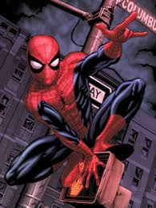
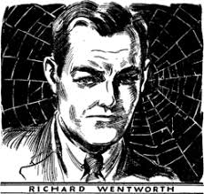
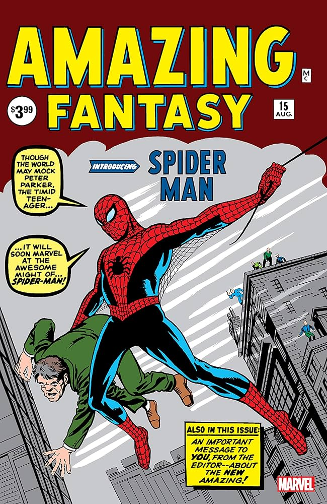
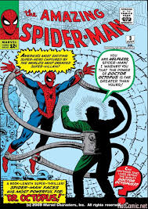

Spider-Man is a superhero appearing in American comic books published by Marvel Comics. Created by writer-editor Stan Lee and writer-artist Steve Ditko, he first appeared in the anthology comic book Amazing Fantasy #15 (August 1962) in the Silver Age of Comic Books. He has been featured in comic books, television shows, and films, video games, novels, and plays.
In 1962, with the success of the Fantastic Four, Marvel Comics editor and head writer Stan Lee was looking for a new superhero idea. He said the teenage demand for comic books and a character with whom they could identify. As with Fantastic Four, Lee saw Spider-Man as an opportunity to "get out of his system" what he felt was missing in comic books.In his autobiography, Lee cites the non-superhuman pulp magazine crime fighter the Spider as a great influence, and in a multitude of print and video interviews, Lee also says he was inspired by seeing a spider climb up a wall—adding in his autobiography that he has told that story so often he has become unsure of whether or not this is true.


